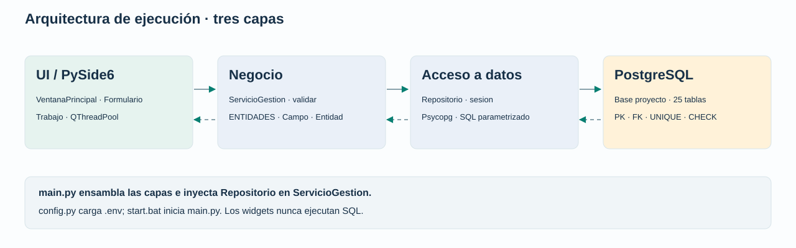

Actor, límites del sistema y 12 fichas de operaciones.
02 / DATOSEntidad–relación25 tablas, cinco diagramas y diccionario completo de campos.
03 / COMPORTAMIENTOSecuenciasCalendario, consultas, guardado, ventas, pagos, compras y eliminación.
Diseño de la versión implementada
LimpiezaSoft es un proyecto escolar de gestión de una empresa de limpieza. Esta documentación describe los archivos existentes y las reglas efectivamente implementadas. El esquema de referencia es db.sql.
Arquitectura en tres capas

{kind=link}
| Responsabilidad | Archivos | Descripción |
|---|---|---|
| Presentación | ui/ventana.py y ui/tema.py | Navegación, formularios, listados, confirmaciones y mensajes; tareas en segundo plano. |
| Negocio | negocio/modelos.py y negocio/servicios.py | Metadatos, validación, hashes, casos de uso, solicitud de recálculos y control de sobrepagos. |
| Acceso a datos | datos/repositorio.py | Consultas parametrizadas, proyecciones SQL de totales, conexiones, transacciones y traducción de errores. |
| Composición | main.py, config.py y start.bat | Inyectar dependencias, cargar configuración y arrancar la aplicación desde su carpeta. |
El servicio recibe un repositorio por inyección. El repositorio recibe metadatos de entidad y no importa widgets Qt. La UI invoca casos de uso y no construye SQL. La configuración se mantiene fuera de los formularios y las credenciales no forman parte de estos documentos.
Decisiones de diseño
- Formularios por metadatos: los 25 módulos comparten la misma UI y reglas por tipo de campo.
- Exactitud monetaria: Decimal en negocio y NUMERIC en PostgreSQL; hasta dos decimales.
- Atomicidad: detalle, recálculo y validación de saldo se confirman o revierten juntos.
- Concurrencia: bloqueo transaccional compartido por las escrituras de esta aplicación. Ediciones externas por SQL no ejecutan sus reglas Python.
- Relaciones: los selectores muestran nombres e identificadores; PostgreSQL conserva la integridad referencial.
- Secretos: .env local fuera de Git; contraseñas de usuarios con hash y sin exposición en listados.
- Escala escolar: listados de 100 registros y catálogos completos en selectores.
Trazabilidad y verificación
| Documento | Fuente | Qué verificar |
|---|---|---|
| Casos de uso | UI y entidades | Acciones visibles, actor único y límites de alcance. |
| Entidad–relación | Esquema SQL | 25 tablas, todas las FK, nulabilidad, unicidad, cascadas y columnas generadas. |
| Secuencias | Servicios y repositorio | Validación previa, transacciones, recálculos y rollback ante sobrepago. |
| Pruebas existentes | Negocio y integración | Reglas unitarias y comportamiento en un esquema PostgreSQL aislado. |
Iniciar la aplicación
Desde la raíz del proyecto, abre start.bat con doble clic o ejecuta:
.\start.batEl script cambia a su propia carpeta, verifica el entorno .venv y las dependencias e inicia main.py. Si falta algo, muestra los comandos de instalación. No instala paquetes ni cambia la base de datos automáticamente.
Consultar y mantener estos documentos
Abre design/index.html en un navegador. Los HTML y SVG funcionan sin Internet. En GitHub los HTML se muestran como archivos fuente: descarga o clona el repositorio para visualizarlos como páginas; los SVG también se pueden abrir individualmente.
Los entregables están pre-generados. Para actualizarlos después de cambiar el esquema:
.\.venv\Scripts\python.exe design\generar.pygenerar.py usa solo la biblioteca estándar de Python y lee db.sql, sin conectarse a la base. Genera el diccionario, relaciones y páginas; los casos de uso y secuencias se mantienen en sus datos declarativos. Si cambia el comportamiento, revisa esas descripciones además de regenerar.